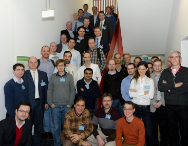

Multicore Application Debugging Workshop
On November 14th and 15th, 2013, the Institute for Integrated Systems at Technische Universität München and the Institute for Communication Technologies and Embedded System at RWTH Aachen jointly organized a workshop on the challenges of debugging in the multicore era. Around 50 participants have been invited to attend the workshop and 22 presentations on a broad range of topics targeting the multicore debugging challenge have been arranged. The workshop was a great success. Below you can find the presentations held at the workshop. If you want to get updated about plans of the workshop in 2014, please contact mad-workshop@lis.ei.tum.de.
Program & Slides
(All slides are copyrighted by the authors)
Session 1: The Need for Multicore Debugging
- Sporadic Failures - Implications for Multicore
Münz, Franz (Cassidian)
- Multi-Core debugging challenges for the automotive domain
Härdtlein, Jochen (Bosch)
- Unpicking the weave: A practitioners view of challenges faced in debugging multi-threaded / many-core applications
Hickey, Neil (Samsung)
Session 2: Trace Debugging Concepts
- State-of-the-art Multicore Debugging and Tracing concepts
Merkle, Alexander (Lauterbach)
- Trace Debugging in Academics – the Future of Multicore Debugging?
Wagner, Philipp (TU München)
Session 3: Simulation-based Debugging and Trace Analysis
- Analysis of simulation traces for the debug of HW/SW multiprocessor systems
Fournel, Nicolas (University of Grenoble, TIMA lab)
- Automatic exploration of SW concurrency bugs through deterministic behavior control
Murillo, Luis (RWTH Aachen)
Session 4: Software Debugging Techniques
- Finding the needle in the haystack: System software debugging at the right level of abstraction
Nohl, Achim (Synopsys)
- Data race detection with GDB
Tedeschi, Walfred (Intel)
- Synchronized debugging of heterogeneous processors on an MPSoC for high-speed mobile communications
Steeb, Uwe (Intel Mobile Communications)
Session 5: Dealing with Non-functional Requirements
- Use of functionality debugging methods for debugging of non-functional properties
Roychoudhury, Abhik (National University of Singapore)
- Debugging tool functionality for Multicore real-time applications under Linux
Wrobel, Heinz (Freescale)
Session 6: HW Support for Debugging
- Transactor-based debugging of massively parallel processor array architectures
Blocherer, Markus (University of Erlangen)
- Intel(R) Processor Trace: what it is and how to decode it
Metzger, Markus (Intel)
- Energy efficient watchpoint systems
Unsal, Osman (Barcelona Supercomputing Center)
Session 7: Observability and Runtime Verification
- Observation of multicore SoCs
Weiss, Alexander (Accemic)
- Hunting non-deterministic failures with Runtime Verification
Leucker, Martin (University of Lübeck)
- Adaptive Runtime Verification
Grosu, Radu (TU Wien)
Session 8: Software and Models
- How model-based design simplifies the debugging of many-core systems
Bacivarov, Iuliana (ETH Zürich)
- Debugging of application software based on KPN on heterogeneous multi-/ many-core processors
Matsumoto, Yukoh (TOPS Systems)
Session 9: Compilers and Beyond Debugging
- Multicore debugging from a SW compiler perspective
Roodzant, Marco (ACE)
- Embedded Health - The step beyond debugging
Mayer, Albrecht (Infineon)